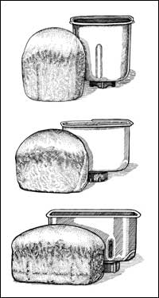

The Zojirushi Home Bakery Supreme BBCC-X20 ($200), Toastmaster Bread Maker TBR15 ($45) and the Breadman Pro Double Loaf TR2828 ($100). All three machines have a special setting for heavier whole-wheat breads, and the Zojirushi also allows for a custom setting. The Toastmaster has the smallest cube-shaped pan size. The Breadman makes two loaves at a time, in the standard cube shape. The Zojirushi is the only one that produces traditional-shaped loaves in its longer, rectangular pan.